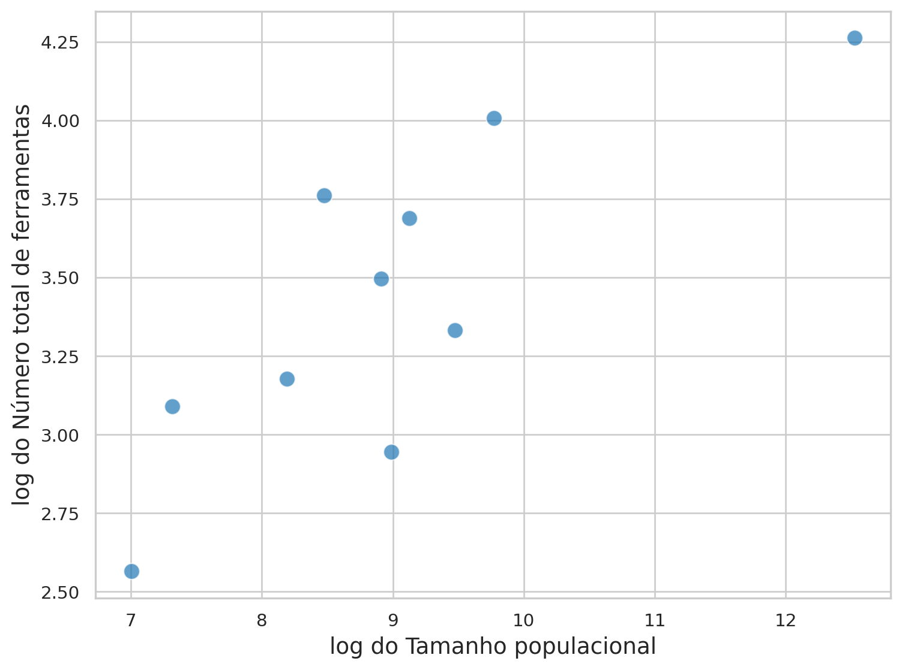
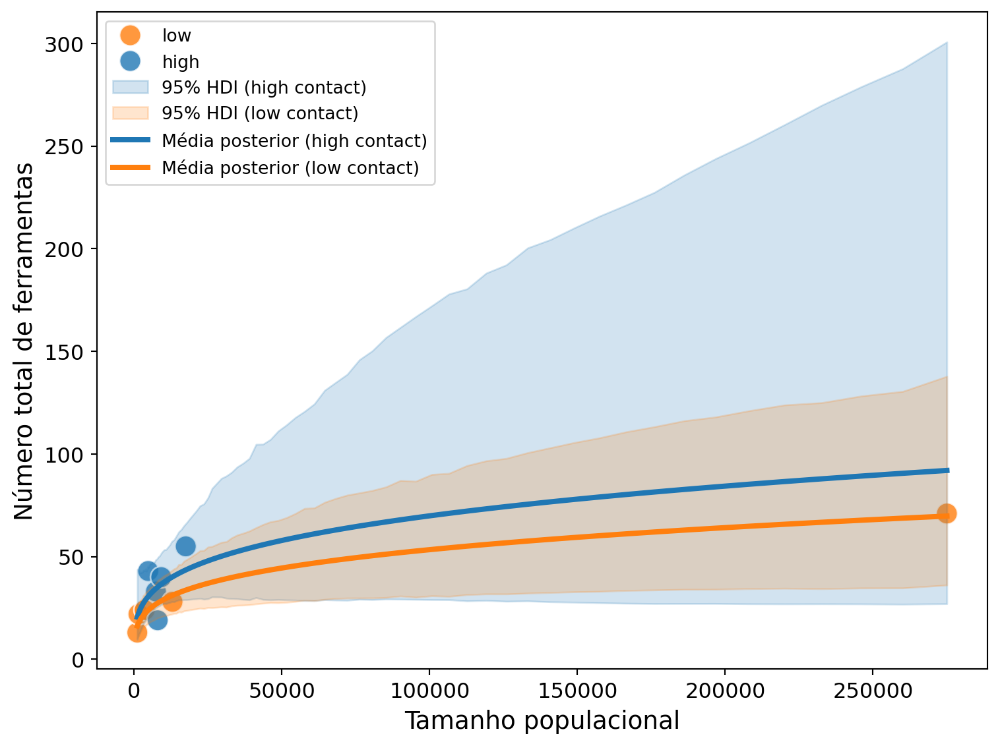
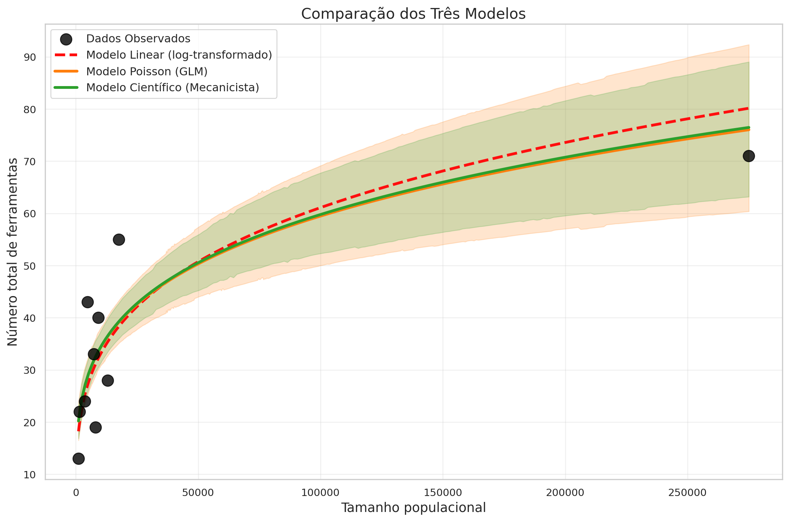

import pymc as pm
import bambi as bmb
import arviz as az
import pandas as pd
import numpy as np
from plotnine import *
import plotly.express as px
import seaborn as sns
import matplotlib.pyplot as pltModelos Estatísticos e Modelos Científicos
Complexidade Tecnológica em Ilhas da Oceania
Como o tamanho das populações e o contato entre sociedades influenciaram a complexidade das ferramentas tradicionais
Vamos utilizar modelos estatísticos para analisar a complexidade tecnológica tradicional em ilhas da Oceania (Kline e Boyd 2010). Nosso objetivo é compreender como o tamanho populacional e a intensidade de contato entre sociedades influenciaram o número de ferramentas (e sua complexidade, medida em unidades tecnológicas). Iniciaremos essa investigação com modelos estatísticos simples, progredindo para Modelos Lineares Generalizados (GLMs), com especial atenção à regressão de Poisson, que é particularmente adequada para dados de contagem como o número de ferramentas. Posteriormente, exploraremos a construção de um modelo científico (mecanicista) baseado em uma descrição da dinâmica de aquisição e perda de ferramentas por uma sociedade conforme apresentado por McElreath (2018).
Inicialmente, vamos avaliar o conjunto de dados kline.csv.
kline = pd.read_csv('https://raw.githubusercontent.com/FCopf/datasets/refs/heads/main/kline.csv')
kline| culture | population | contact | total_tools | mean_TU | lat | lon | |
|---|---|---|---|---|---|---|---|
| 0 | Malekula | 1100 | low | 13 | 3.2 | -16.3 | 167.5 |
| 1 | Tikopia | 1500 | low | 22 | 4.7 | -12.3 | 168.8 |
| 2 | Santa Cruz | 3600 | low | 24 | 4.0 | -10.7 | 166.0 |
| 3 | Yap | 4791 | high | 43 | 5.0 | 9.5 | 138.1 |
| 4 | Lau Fiji | 7400 | high | 33 | 5.0 | -17.7 | 178.1 |
| 5 | Trobriand | 8000 | high | 19 | 4.0 | -8.7 | 150.9 |
| 6 | Chuuk | 9200 | high | 40 | 3.8 | 7.4 | 151.6 |
| 7 | Manus | 13000 | low | 28 | 6.6 | -2.1 | 146.9 |
| 8 | Tonga | 17500 | high | 55 | 5.4 | -21.2 | -175.2 |
| 9 | Hawaii | 275000 | low | 71 | 6.6 | 19.9 | -155.6 |
E visualizar a relação entre tamanho populacional (P), intensidade de contato e número total de ferramentas (T).
(
ggplot(kline, aes(x='population', y='total_tools', color='contact')) +
geom_point(size=5, alpha=0.7) +
scale_color_manual(values={'high': '#1f77b4', 'low': '#ff7f0e'}) +
labs(x='Tamanho populacional',
y='Número total de ferramentas',
color='Intensidade de contato') +
theme(legend_position = 'top')
)1 Regressão linear: transformação logarítmica
A relação na Figura 1 é claramente não linear e pode ser descrita por
\[T = \beta_0P^{\beta_1}\]
Um alterativa simples neste caso, é utilizar uma transformação logarítmica para linearizar a expressão:
\[log(T) = log(\beta_0P^{\beta_1}) \Rightarrow log(T) = log(\beta_0) + log(P^{\beta_1}) \Rightarrow\]
\[log(T) = B_0 + \beta_1 log(P) \tag{1}\]
em que \(\textit{B}_0 = log(\beta_0)\)
O que resulta na abaixo:
(
ggplot(kline, aes(x='population', y='total_tools', color='contact')) +
geom_point(size=5, alpha=0.7) +
scale_color_manual(values={'high': '#1f77b4', 'low': '#ff7f0e'}) +
scale_y_continuous(trans='log') +
scale_x_continuous(trans='log') +
labs(x='Tamanho populacional (escala log)',
y='Número total de ferramentas (escala log)',
color='Intensidade de contato') +
theme(legend_position = 'top')
)

Considerando que a relação na Figura 2 é aproximadamente linear, vamos ajustar o modelo de regressão linear descrito na Equação 1.
Neste modelo, estamos assumindo que:
\[log(T) ~ \sim \mathcal{N}(\mu,\,\sigma)\]
\[\mu = B_0 + \beta_1 log(P)\]
kline['log_tools'] = np.log(kline['total_tools'])
kline['log_pop'] = np.log(kline['population'])
rl = bmb.Model('log_tools ~ log_pop', data=kline)
# Amostragem posterior
rl_fit = rl.fit(draws=2000, tune=1000)
# Resumo dos parâmetros
az.summary(rl_fit)| mean | sd | hdi_3% | hdi_97% | mcse_mean | mcse_sd | ess_bulk | ess_tail | r_hat | |
|---|---|---|---|---|---|---|---|---|---|
| sigma | 0.365 | 0.102 | 0.204 | 0.555 | 0.002 | 0.002 | 4293.0 | 4841.0 | 1.0 |
| Intercept | 1.028 | 0.746 | -0.363 | 2.471 | 0.010 | 0.012 | 6131.0 | 4770.0 | 1.0 |
| log_pop | 0.268 | 0.082 | 0.113 | 0.425 | 0.001 | 0.001 | 6117.0 | 4648.0 | 1.0 |
Extraindo amostras da posterior para construir a reta média
rl_post = rl_fit.posterior
beta_0 = rl_post['Intercept'].mean().item()
beta_1 = rl_post['log_pop'].mean().item()
# Gera reta de predição
x_vals = np.linspace(kline['log_pop'].min(), kline['log_pop'].max(), 100)
y_vals = beta_0 + beta_1 * x_vals# Plotando o resultado
plt.figure(figsize=(8, 6))
sns.scatterplot(data=kline, x='log_pop', y='log_tools',
hue='contact', palette={'high': '#1f77b4', 'low': '#ff7f0e'}, s=150, alpha=0.7)
# Adicionando as retas de predição
plt.plot(x_vals, y_vals, color='#ff0e0e', linestyle='-', linewidth=3, label='Predição')
plt.xlabel('log(Tamanho populacional)', fontsize=14)
plt.ylabel('log(Número total de ferramentas)', fontsize=14)
plt.xticks(fontsize=12)
plt.yticks(fontsize=12)
plt.legend()
plt.tight_layout()
plt.show()A reta parece se ajustar bem ao pontos. Vamos agora incluir no modelo o efeito da intensidade de contato.
rli = bmb.Model('log_tools ~ log_pop * contact', data=kline)
# Amostragem posterior
rli_fit = rli.fit(draws=2000, tune=1000)
# Resumo dos parâmetros
az.summary(rli_fit)| mean | sd | hdi_3% | hdi_97% | mcse_mean | mcse_sd | ess_bulk | ess_tail | r_hat | |
|---|---|---|---|---|---|---|---|---|---|
| sigma | 0.364 | 0.108 | 0.201 | 0.560 | 0.002 | 0.002 | 1448.0 | 768.0 | 1.0 |
| Intercept | 1.156 | 1.595 | -1.903 | 4.080 | 0.034 | 0.024 | 2140.0 | 2928.0 | 1.0 |
| log_pop | 0.268 | 0.176 | -0.070 | 0.592 | 0.004 | 0.003 | 2120.0 | 3005.0 | 1.0 |
| contact[low] | -0.209 | 1.487 | -3.000 | 2.567 | 0.034 | 0.023 | 1913.0 | 2749.0 | 1.0 |
| log_pop:contact[low] | -0.005 | 0.164 | -0.318 | 0.295 | 0.004 | 0.002 | 1908.0 | 2781.0 | 1.0 |
E plotar as retas médias com seus intervalos de credibilidade.
rli_post = rli_fit.posterior
beta_0_samples = rli_post['Intercept'].values.flatten()
beta_1_samples = rli_post['log_pop'].values.flatten()
beta_2_samples = rli_post['contact'].values.flatten()
beta_3_samples = rli_post['log_pop:contact'].values.flatten()# Gera valores de x para predição
x_vals = np.linspace(kline['log_pop'].min(), kline['log_pop'].max(), 100)
# Calcula predições para todas as amostras
n_samples = len(beta_0_samples)
predictions_high = np.zeros((n_samples, len(x_vals)))
predictions_low = np.zeros((n_samples, len(x_vals)))
for i in range(n_samples):
# Para contato 'high' (categoria de referência)
predictions_high[i] = beta_0_samples[i] + beta_1_samples[i] * x_vals
# Para contato 'low'
predictions_low[i] = (beta_0_samples[i] + beta_2_samples[i]) + (beta_1_samples[i] + beta_3_samples[i]) * x_vals# Calcula médias e intervalos de credibilidade
mean_high = np.mean(predictions_high, axis=0)
mean_low = np.mean(predictions_low, axis=0)
# Intervalos de credibilidade de 95%
hdi_high = az.hdi(predictions_high, hdi_prob=0.95)
hdi_low = az.hdi(predictions_low, hdi_prob=0.95)# Plotando o resultado
plt.figure(figsize=(8, 6))
# Scatter plot dos dados
sns.scatterplot(data=kline, x='log_pop', y='log_tools',
hue='contact', palette={'high': '#1f77b4', 'low': '#ff7f0e'}, s=150, alpha=0.8)
# Bandas de credibilidade
plt.fill_between(x_vals, hdi_high[:, 0], hdi_high[:, 1],
color='#1f77b4', alpha=0.2, label='95% HDI (high contact)')
plt.fill_between(x_vals, hdi_low[:, 0], hdi_low[:, 1],
color='#ff7f0e', alpha=0.2, label='95% HDI (low contact)')
# Retas de predição (médias)
plt.plot(x_vals, mean_high, color='#1f77b4', linestyle='-', linewidth=3,
label='Média posterior (high contact)')
plt.plot(x_vals, mean_low, color='#ff7f0e', linestyle='-', linewidth=3,
label='Média posterior (low contact)')
plt.xlabel('log(Tamanho populacional)', fontsize=14)
plt.ylabel('log(Número total de ferramentas)', fontsize=14)
plt.xticks(fontsize=12)
plt.yticks(fontsize=12)
plt.legend(loc='lower right', fontsize=10)
plt.tight_layout()
plt.show()Como a regressão foi feita na escala logarítmica precisamos retornar à escala original para verificar os valores preditos.
x_vals_or = np.exp(x_vals)
hdi_high_or = np.exp(hdi_high)
hdi_low_or = np.exp(hdi_low)
mean_high_or = np.exp(mean_high)
mean_low_or = np.exp(mean_low)# Plotando o resultado
plt.figure(figsize=(8, 6))
# Scatter plot dos dados
sns.scatterplot(data=kline, x='population', y='total_tools',
hue='contact', palette={'high': '#1f77b4', 'low': '#ff7f0e'}, s=150, alpha=0.8)
# Bandas de credibilidade
plt.fill_between(x_vals_or, hdi_high_or[:, 0], hdi_high_or[:, 1],
color='#1f77b4', alpha=0.2, label='95% HDI (high contact)')
plt.fill_between(x_vals_or, hdi_low_or[:, 0], hdi_low_or[:, 1],
color='#ff7f0e', alpha=0.2, label='95% HDI (low contact)')
# Retas de predição (médias)
plt.plot(x_vals_or, mean_high_or, color='#1f77b4', linestyle='-', linewidth=3,
label='Média posterior (high contact)')
plt.plot(x_vals_or, mean_low_or, color='#ff7f0e', linestyle='-', linewidth=3,
label='Média posterior (low contact)')
plt.xlabel('Tamanho populacional', fontsize=14)
plt.ylabel('Número total de ferramentas', fontsize=14)
plt.xticks(fontsize=12)
plt.yticks(fontsize=12)
plt.legend(loc='upper left', fontsize=10)
plt.tight_layout()
plt.show()
2 Regressão de Poisson: dados de contagem
Embora a transformação logarítmica torne linear a porção determinística do modelo, ela não resolve adequadamente a natureza discreta da variável de resposta. No caso do número de ferramentas (total_tools), estamos lidando com dados de contagem — valores inteiros não negativos. Uma abordagem mais apropriada é utilizar uma regressão de Poisson, que modela diretamente a distribuição da variável como uma variável aleatória de contagem.
Neste contexto, vamos explorar a hipótese de que o número de ferramentas disponíveis em uma sociedade depende de três fatores:
O tamanho populacional (em escala logarítmica): O que realmente influencia a diversidade tecnológica não é o tamanho absoluto da população, mas sim sua ordem de grandeza (Kline e Boyd 2010). Espera-se, portanto, uma associação positiva entre o número de ferramentas e o logaritmo do tamanho populacional.
A taxa de contato entre as ilhas: Ilhas com maior conectividade social e cultural tendem a manter ou adquirir mais tipos de ferramentas. Assim, espera-se um efeito positivo do nível de contato.
Interação entre população e contato: O efeito da população pode depender do nível de contato: em contextos mais conectados, o impacto do tamanho populacional sobre a diversidade de ferramentas pode ser mais pronunciado. Vamos representar essa moderação por meio de um termo de interação entre
log(população)econtato.
Com base nessas hipóteses, ajustaremos um modelo de regressão de Poisson no qual a expectativa do número de ferramentas é uma função log-linear desses três componentes.
O modelo generativo pode ser descrito como:
\[ T_i \sim \text{Poisson}(\lambda_i) \]
\[ \log(\lambda_i) = \beta_0 + \beta_1 \cdot \log(P_i) + \beta_2 \cdot C_i + \beta_3 \cdot \log(P_i) \cdot C_i \]
Onde:
- \(T_i\) é o número de ferramentas na sociedade i;
- \(P_i\) é o tamanho populacional;
- \(C_i\) representa o nível de contato (por exemplo, high ou low);
- A interação \(\log(P_i) \cdot C_i\) permite que o efeito de \(\log(P_i)\) varie conforme o nível de contato.
2.1 Ajustando o modelo com bambi
priors_rp={
"Intercept": bmb.Prior("Normal", mu=3, sigma=0.5),
"log_pop": bmb.Prior("Normal", mu=0, sigma=1),
"contact": bmb.Prior("Normal", mu=0, sigma=1),
"log_pop:contact": bmb.Prior("Normal", mu=0, sigma=1)
}
rpois = bmb.Model(
"total_tools ~ log_pop * contact",
family="poisson",
data=kline,
priors=priors_rp
)
rpois_fit = rpois.fit(draws=2000, tune=1000)az.summary(rpois_fit)| mean | sd | hdi_3% | hdi_97% | mcse_mean | mcse_sd | ess_bulk | ess_tail | r_hat | |
|---|---|---|---|---|---|---|---|---|---|
| Intercept | 0.865 | 0.884 | -0.719 | 2.568 | 0.020 | 0.013 | 1951.0 | 2385.0 | 1.0 |
| log_pop | 0.304 | 0.097 | 0.124 | 0.485 | 0.002 | 0.001 | 1954.0 | 2530.0 | 1.0 |
| contact[low] | 0.047 | 0.843 | -1.538 | 1.567 | 0.019 | 0.012 | 1904.0 | 2358.0 | 1.0 |
| log_pop:contact[low] | -0.038 | 0.093 | -0.213 | 0.131 | 0.002 | 0.001 | 1890.0 | 2369.0 | 1.0 |
2.2 Extração das amostras da posterior
rpois_post = rpois_fit.posterior
beta_0_samples = rpois_post['Intercept'].values.flatten()
beta_1_samples = rpois_post['log_pop'].values.flatten()
beta_2_samples = rpois_post['contact'].values.flatten()
beta_3_samples = rpois_post['log_pop:contact'].values.flatten()2.3 Geração de predições (ainda na escala do preditor linear)
x_vals = np.linspace(kline['log_pop'].min(), kline['log_pop'].max(), 100)
n_samples = len(beta_0_samples)
predictions_high = np.zeros((n_samples, len(x_vals)))
predictions_low = np.zeros((n_samples, len(x_vals)))
for i in range(n_samples):
# Contato 'high' (referência)
predictions_high[i] = beta_0_samples[i] + beta_1_samples[i] * x_vals
# Contato 'low'
predictions_low[i] = (beta_0_samples[i] + beta_2_samples[i]) + (beta_1_samples[i] + beta_3_samples[i]) * x_vals2.4 Transformando para escala da resposta (contagens esperadas)
# Aplica exponencial para obter E[Y]
mu_high = np.exp(predictions_high)
mu_low = np.exp(predictions_low)
# Médias e intervalos de 95% (na escala original)
mean_high = mu_high.mean(axis=0)
mean_low = mu_low.mean(axis=0)
hdi_high = az.hdi(mu_high, hdi_prob=0.95)
hdi_low = az.hdi(mu_low, hdi_prob=0.95)2.5 Gráfico com predições e intervalos de credibilidade
plt.figure(figsize=(8, 6))
# Gráfico de dispersão
sns.scatterplot(
data=kline, x='population', y='total_tools',
hue='contact', palette={'high': '#1f77b4', 'low': '#ff7f0e'},
s=150, alpha=0.8
)
# Intervalos de credibilidade
plt.fill_between(np.exp(x_vals), hdi_high[:, 0], hdi_high[:, 1],
color='#1f77b4', alpha=0.2, label='95% HDI (high contact)')
plt.fill_between(np.exp(x_vals), hdi_low[:, 0], hdi_low[:, 1],
color='#ff7f0e', alpha=0.2, label='95% HDI (low contact)')
# Médias posteriores
plt.plot(np.exp(x_vals), mean_high, color='#1f77b4', linewidth=3, label='Média posterior (high contact)')
plt.plot(np.exp(x_vals), mean_low, color='#ff7f0e', linewidth=3, label='Média posterior (low contact)')
plt.xlabel('Tamanho populacional', fontsize=14)
plt.ylabel('Número total de ferramentas', fontsize=14)
plt.xticks(fontsize=12)
plt.yticks(fontsize=12)
plt.legend(loc='upper left', fontsize=10)
plt.tight_layout()
plt.show()
3 Um modelo científico: a dinâmica da inovação tecnológica
Partindo do modelo verbal apresentado anteriormente, podemos expressar a mudança esperada no número de ferramentas ao longo do tempo como:
\[ \Delta T = \alpha P^\beta - \gamma T \]
Onde:
- \(P\) é o tamanho da população,
- \(T\) é o número de ferramentas,
- \(\alpha\), \(\beta\) e \(\gamma\) são parâmetros a serem estimados.
Vamos assumir como pressuposto que o número de ferramentas observado está em equilíbrio. Para encontrar o número de ferramentas em equilíbrio, basta definir \(\Delta T = 0\) e resolver para \(T\).
Situação de equilíbrio
Começamos com:
\[ 0 = \alpha P^\beta - \gamma T \]
Isolando o termo \(T\):
\[ \gamma T = \alpha P^\beta \]
Dividindo ambos os lados por \(\gamma\) temos:
\[ T = \frac{\alpha P^\beta}{\gamma} \tag{2}\]
O valor de \(T\) agora representa o número esperado de ferramentas em equilíbrio, assumindo que a taxa de inovação (\(\alpha P^\beta\)) é exatamente compensada pela taxa de perda (\(\gamma T\)).
- \(\alpha\): controla a taxa base de inovação;
- \(\beta\): define como a população afeta essa taxa (exponencialmente);
- \(\gamma\): representa a taxa de perda ou obsolescência de ferramentas.
Vamos incorporar Equação 2 a um modelo de Poisson, pois essa continua sendo a distribuição adequada para dados de contagem — como total_tools, que representa um número inteiro positivo.
Vamos assumir portando que a variável aleatória \(T\) tem distribuição dada por:
\[ T_i \sim \text{Poisson}(\lambda_i) \]
\[ \lambda_i = \frac{\alpha P_i^{\beta}}{\gamma} \]
Não usaremos a função de linação, mas é garantir que \(\lambda\) seja sempre positiva. Para isso, utilizaremos uma distribuição log-normal para \(\alpha\) e distribuições exponenciais para \(\beta\) e \(\gamma\), assegurando que todos os parâmetros permaneçam positivos.
Também queremos permitir que esses parâmetros variações com a taxa de contato. Como essa taxa pode mediar a influência do tamanho populacional, podemos modelar \(\alpha\) e \(\beta\) como funções do contato — e até mesmo \(\gamma\), considerando que redes sociais mais densas podem reter ferramentas por mais tempo. A depender do objetivo, podemos permitir diferentes combinações de variação nos parâmetros para capturar os efeitos do contato de forma mais realista.
3.1 O modelo
Escreveremos o modelo em PyMC em que os parâmetros \(\alpha\) e \(\beta\) variam com a taxa de contato (contact: “high” ou “low”). Queremos modelar:
\[ T_i \sim \text{Poisson}(\lambda_i), \quad \text{onde} \quad \lambda_i = \frac{\alpha_c P_i^{\beta_c}}{\gamma} \]
Em que:
- \(T_i\): número de ferramentas na ilha \(i\)
- \(P_i\): população da ilha \(i\)
- \(c \in \{\text{high}, \text{low}\}\): categoria de contato
- \(\alpha_c\), \(\beta_c\): variam com o nível de contato
- \(\gamma\): constante positiva (global)
3.2 Observação importante
Como o PyMC trabalha melhor com o preditor linear, vamos reparametrizar para usar:
\[ \log(\lambda_i) = \log(\alpha_c) + \beta_c \cdot \log(P_i) - \log(\gamma) \]
ou equivalentemente:
\[ \log(\lambda_i) = \theta_{\alpha, c} + \beta_c \cdot \log(P_i) + \theta_\gamma \]
onde:
- \(\theta_{\alpha, c} = \log(\alpha_c)\)
- \(\theta_\gamma = -\log(\gamma)\)
3.3 Código em PyMC
# Assume: kline DataFrame com colunas 'total_tools', 'population', 'contact'
# Codificar contato como índice (0 = high, 1 = low)
kline['contact_code'] = kline['contact'].map({'high': 0, 'low': 1})
log_pop = np.log(kline['population'])
contact_idx = kline['contact_code'].values
tools = kline['total_tools'].values
with pm.Model() as model:
# Priors para log(alpha) por grupo de contato
theta_alpha = pm.Normal("theta_alpha", mu=0, sigma=2, shape=2)
# Priors para beta por grupo de contato
beta = pm.Normal("beta", mu=0, sigma=1, shape=2)
# Prior para log(gamma)
theta_gamma = pm.Normal("theta_gamma", mu=0, sigma=1)
# Esperança em escala log (link log para Poisson)
log_lambda = theta_alpha[contact_idx] + beta[contact_idx] * log_pop + theta_gamma
lambda_ = pm.math.exp(log_lambda)
# Likelihood
T_obs = pm.Poisson("total_tools", mu=lambda_, observed=tools)
# Amostragem
trace = pm.sample(2000, tune=1000, target_accept=0.95)Recuperando \(\alpha\) e \(\gamma\) de volta a partir dos parâmetros amostrados:
import arviz as az
posterior = trace.posterior
# Recuperar alpha e gamma
alpha_samples = np.exp(posterior['theta_alpha']) # shape (chain, draw, contact)
gamma_samples = np.exp(-posterior['theta_gamma']) # shape (chain, draw)Referências
Kline, Michelle A, e Robert Boyd. 2010. «Population size predicts technological complexity in Oceania». Proceedings of the Royal Society B: Biological Sciences 277 (1693): 2559–64. https://www.researchgate.net/publication/43147721_Population_Size_Predicts_Technological_Complexity_in_Oceania.
McElreath, Richard. 2018. Statistical rethinking: A Bayesian course with examples in R and Stan. Chapman; Hall/CRC.